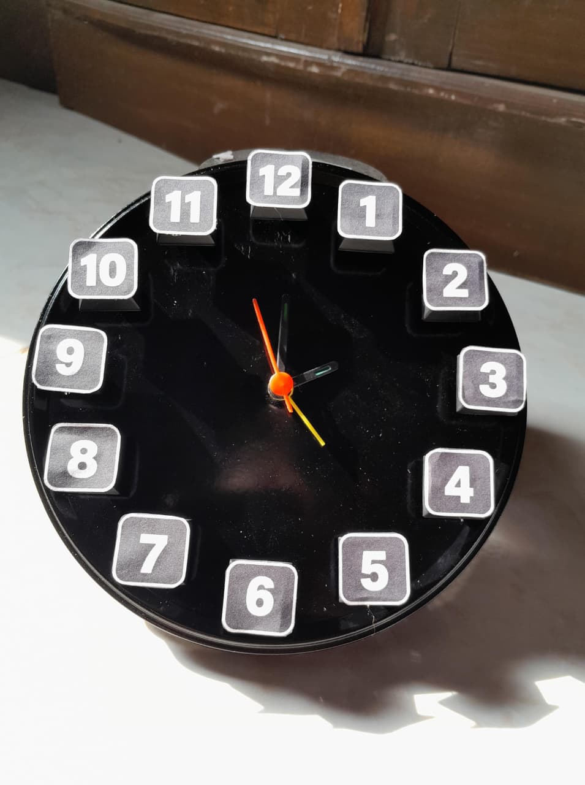
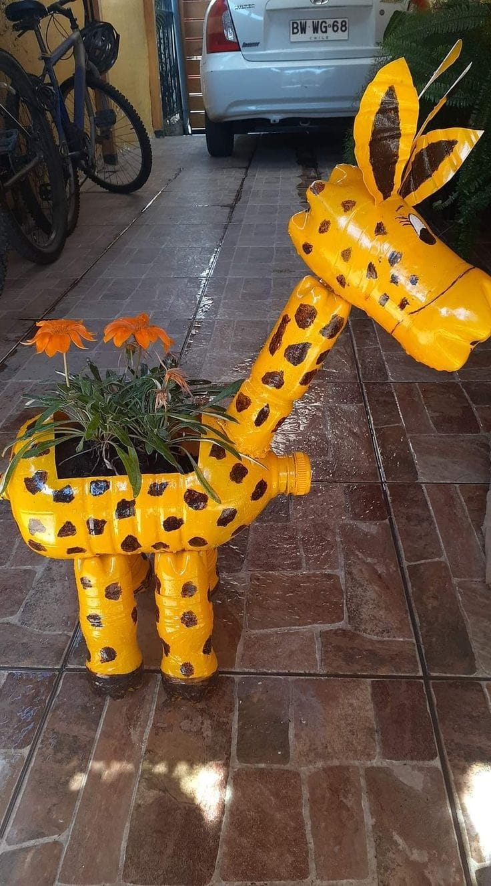
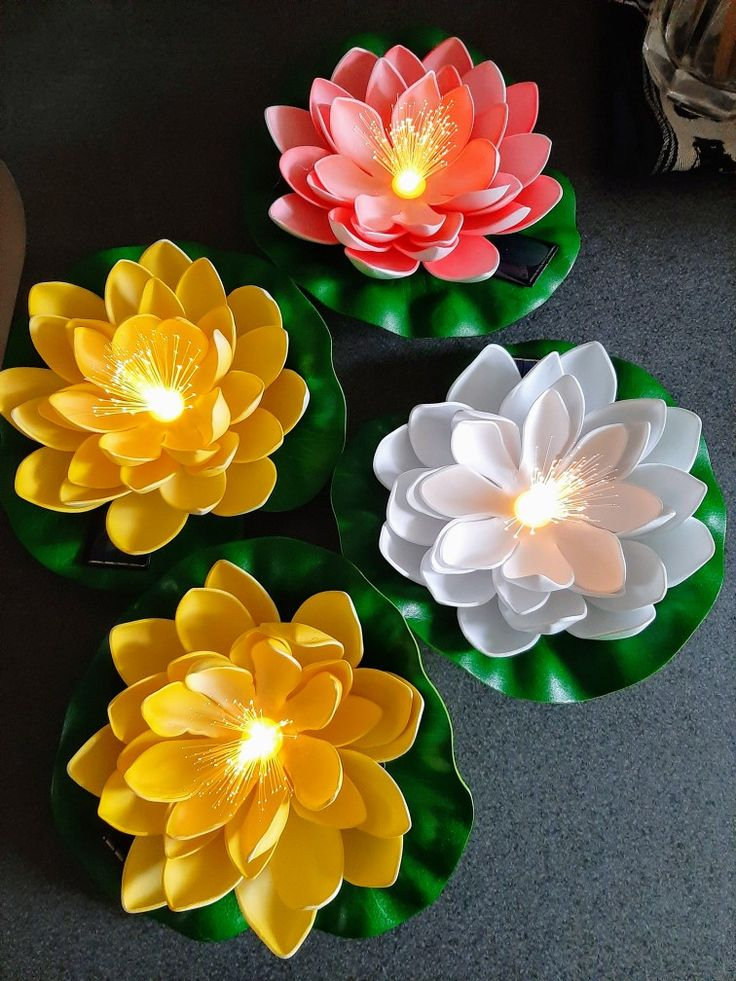

Abdullah Al Ghoniy
PPLG 4 | Absen 01
Mengenal Website Kami
Website KeySound Clock merupakan website proyek kolaborasi kelompok PPLG 4 yang berisi informasi mengenai berbagai produk kerajinan kreatif dari barang bekas. Website ini menampilkan hasil karya, penjelasan setiap produk, hasil pembelajaran dari berbagai mata pelajaran, profil anggota kelompok, serta informasi kontak. Melalui website ini, pengunjung dapat mengenal hasil kreativitas dan proses pemanfaatan barang bekas menjadi produk yang bermanfaat dan bernilai guna.
Berikut enam produk kerajinan kreatif hasil pemanfaatan barang bekas menjadi produk yang bermanfaat dan bernilai ekonomi.

Jam dinding kreatif dari keyboard bekas yang memiliki tampilan unik dan menarik.
Learn More →
Hiasan gantung dari botol plastik memiliki nilai estetika dan kreativitas yang dapat memperindah ruangan.
Learn More →
Tas unik berbahan koran bekas yang diolah menjadi kerajinan bernilai guna.
Learn More →
Galon bekas disulap menjadi pot tanaman yang menarik dan ramah lingkungan.
Learn More →
Sendok plastik bekas dimanfaatkan menjadi hiasan bunga yang cantik dan kreatif.
Learn More →
Plastik bekas diolah menjadi tas yang kreatif dan dapat digunakan kembali.
Learn More →PEMBELAJARAN LINTAS MATA PELAJARAN
Pilih mata pelajaran untuk melihat tiga hasil pekerjaan kelompok.

Jadi, harga 1 Keylight adalah Rp 40.000 dan harga 1 Lumiclock adalah Rp30.000

Jadi, harga 1 Kipas Angin Smart adalah Rp 75.000 dan harga 1 Smart Waste, Smart Future adalah Rp 190.000

Jadi, harga 1 EcoLotus Lamp adalah Rp 45.000 dan harga 1 Reglow tree adalah 65.000
How an Old Keyboard Is Transformed into a Keysound Clock
Electronic waste is one of the environmental problems caused by the rapid development of technology. Old computer keyboards are often discarded when they are damaged or no longer needed. However, these keyboards contain materials that can still be reused. One creative way to manage this waste is by transforming old keyboard keys into a unique decorative clock called the Keysound Clock. This transformation shows how electronic waste can become a useful and valuable product.
The transformation begins when an unused keyboard is separated into individual components. Its plastic keys are carefully removed from the main keyboard structure and separated from other electronic parts. The keys are then cleaned to remove dust and dirt. At this stage, the original function of the keyboard keys changes. Instead of being used for typing, they become decorative materials that will serve as the numbers on a new clock.
The cleaned keys are arranged around a Nissin cup lid that serves as the base of the clock. Numbered keys (from 1 to 12) are attached in their correct positions to form the clock face. Different keys create a distinctive technological appearance that is both functional and stylish. A clock mechanism complete with colorful hands and an alarm system is then installed in the center. Once the keys are firmly fixed and the alarm mechanism is properly set, the separate components become one complete decorative product the Keysound Clock.
As a result, an old computer keyboard is transformed into a Keysound Clock that has both functional and aesthetic value. The product can be used to tell time and set alarms while also serving as a creative decoration. This transformation reduces the amount of electronic waste and encourages the reuse of available materials. Therefore, recycling computer components into decorative products like the Keysound Clock is one way to support a more sustainable environment.
Turing Computer Keyboards Into Unique Alarm Clocks
Electronic waste is an environmental issue stemming from rapid technological advancement. Old computer keyboards are frequently discarded when they break or are no longer in use; however, they contain materials such as plastic keycaps that can still be repurposed. One creative way to manage this waste is by transforming these keycaps into a unique alarm clock known as the "Keysound Clock." This transformation demonstrates how electronic waste can be repurposed into a functional, aesthetically pleasing new product that leverages the distinctive shape of computer keys.
The process begins by taking apart an unused keyboard to retrieve the plastic keycaps, which are removed one by one. These components are then thoroughly cleaned to eliminate any accumulated dust, oil, or grime. At this stage, the keycaps originally designed for typing are repurposed as decorative elements and external covers for the clock unit.
The clock is constructed using a complete clock mechanism or a pre-existing alarm clock as its base. Through precise arrangement, twelve selected keycaps are affixed to the clock face to represent the numbers one through twelve. Additionally, a keycap is attached atop the clock's original alarm button. When the alarm sounds, the user simply presses this external keycap, which in turn activates the actual button underneath to silence the alarm or trigger the snooze function.
Ultimately, the components from old computer keyboards are successfully converted into a "Keysound Clock" a functional alarm clock with a modern-retro aesthetic. This product serves not only as a creative timepiece but also offers a unique look that appeals to technology enthusiasts. Such a transformation effectively reduces electronic plastic waste and promotes the concept of "upcycling." Consequently, repurposing keyboard waste into an alarm clock serves as a real step toward supporting a more sustainable lifestyle.
How to Make a KeySound Clock from Recycled Keyboard Keys
Electronic waste is one of the environmental problems caused by the development of technology. Old computer keyboards are often thrown away because they are damaged or no longer used. However, keyboard keys can still be reused to create useful and creative products. One example is KeySound Clock, a unique wall clock made from recycled keyboard keys. This product combines creativity, functionality, and environmental awareness.
The process begins by preparing the tools and materials needed to make the clock. The materials include unused keyboard keys, a clock machine, clock hands, and a circular base made from recycled materials. Other tools, such as scissors, glue, and a ruler, are also prepared. The keyboard keys are removed from the keyboard and cleaned before being used.
After all the materials are ready, the circular base is prepared as the main part of the clock. Then, the cleaned keyboard keys are arranged and attached to the surface of the base. The keys are positioned to represent the numbers on a clock. Next, a hole is made in the center of the base to install the clock machine and hands. All parts are carefully attached to make sure the clock works properly.
Finally, the KeySound Clock is ready to use as a wall clock and decoration. This product has a unique appearance because it uses recycled keyboard keys as its main decoration. Besides showing the time, KeySound Clock helps reduce electronic waste and encourages people to reuse unused materials. Therefore, this product is a creative way to turn waste into something useful and valuable.
DI BALIK PROYEK INI
Kolaborasi tiga anggota PPLG 4 dalam membuat karya dan menyelesaikan proyek.
PPLG 4 | Absen 01
PPLG 4 | Absen 07
PPLG 4 | Absen 11
HUBUNGI KAMI
Jika ada saran atau pertanyaan, silahkan hubungi anggota kelompok kami.
Jika ada saran atau pertanyaan, silahkan hubungi anggota kelompok kami.
Jl. Darun Na'im, Karangduren, Kec. Tengaran, Kabupaten Semarang, Jawa Tengah 50775